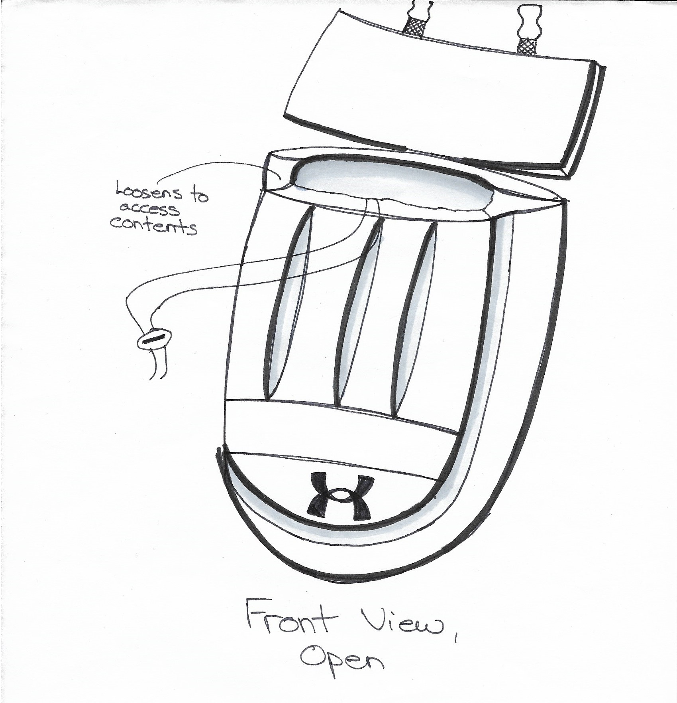
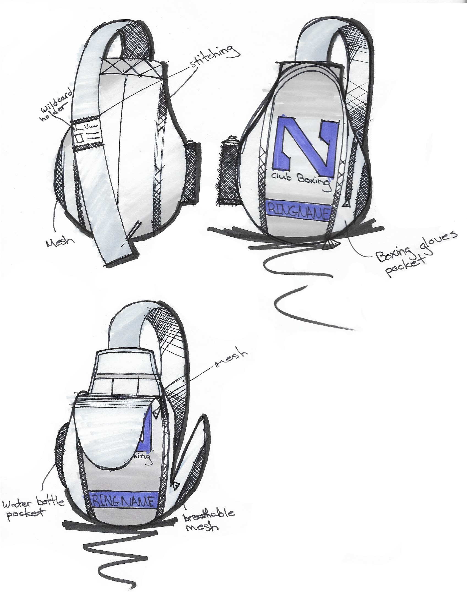

Speed

For this industrial design project we were charged with designing a backpack for a Northwestern sports team (varisty or club). The bag was intended to fit within the Northwestern-Under Armour style of design, and be recognizable as a backpack for the chosen team. As a member of the Evanston Boxing Club, I decided to create a backpack for this team. We started by generating thumbnail sketches

From this point, I picked the concepts that stood out to me and made working drawings based on them. This was the first design I expanded upon, based on a boxing mitt.

I ultimately decided this was not unique enough to the boxing team and could not be recognized easily. I then went back and worked on a second concept, which became my final design. The inspiration for this design was a double-end bag.
